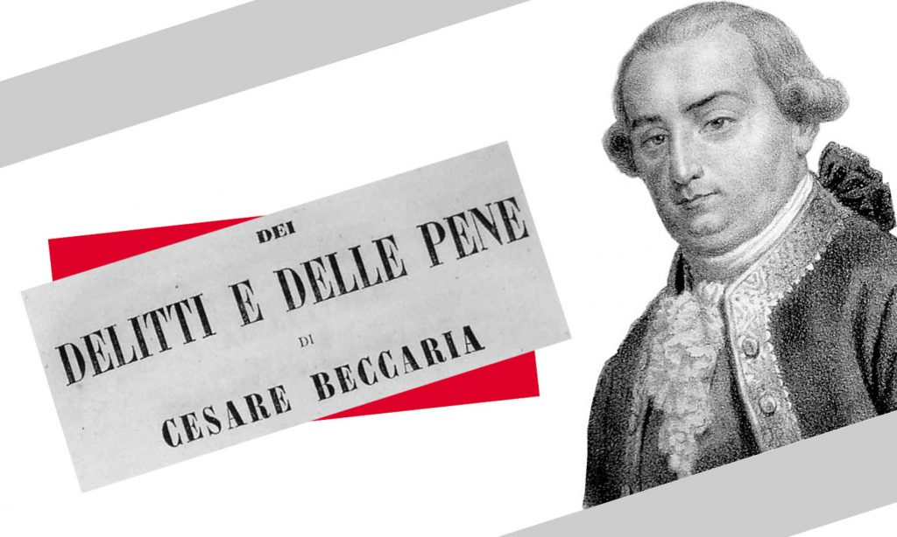

L’abolition de la peine de mort n’est jamais acquise. 60 % de la population mondiale vit toujours dans un pays dont le système pénal comporte la peine de mort et, dans les pays abolitionnistes, l’opinion publique doit sans cesse être informée et sensibilisée. Avec son projet « Éduquer à l’abolition », créé en 2009, ECPM a pu développer différents modes de sensibilisation des jeunes : modules de cours, interventions scolaires et projets de classe sont accessibles gratuitement pour faire réfléchir les élèves au droit à la vie.
ECPM a créé des outils pédagogiques clés en main à destination des enseignants, adaptés aux niveaux des classes et aux matières. Grâce à ces modules de cours, disponibles en version exercices et corrigée pour les enseignants, vous pourrez aborder dans votre classe la question de l’abolition de la peine de mort, de manière autonome, tout en respectant le programme de l’Éducation nationale. Ces outils pédagogiques sont gratuits et disponibles aux enseignants d’anglais, d’arts plastiques, d’éducation civique, d’espagnol, de français et d’histoire-géographie.
Tout seul nous pouvons peu, ensemble nous pouvons tout. Depuis sa création, Ensemble contre la peine de mort a eu à cœur de rassembler tous les acteurs de l’abolition à travers le monde.
Partout dans le monde, des acteurs se mobilisent contre la peine de mort. À la demande de certains d’entre eux, ECPM est intervenu pour renforcer leur capacité d’action et leur fournir son expertise et ses ressources.

Pour mettre fin à la peine de mort, il faut convaincre. ECPM intervient auprès des parlementaires et des chefs d’Etat, au sein des institutions nationales et internationales.
L’abolition de la peine de mort n’est jamais acquise. ECPM intervient donc régulièrement dans l’espace public et les établissements scolaires pour sensibiliser les citoyens d’aujourd’hui et de demain.